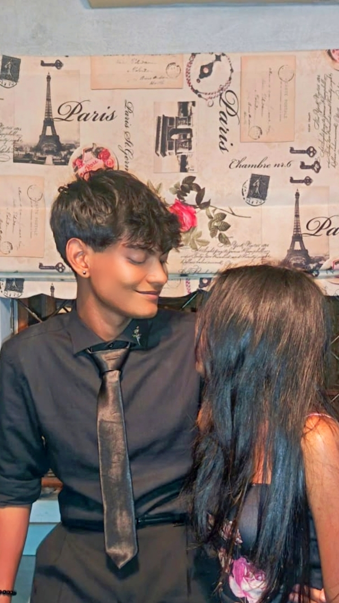
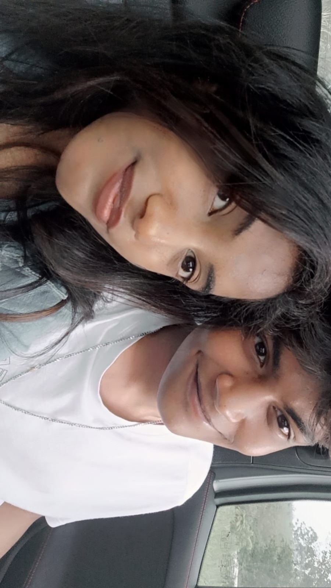
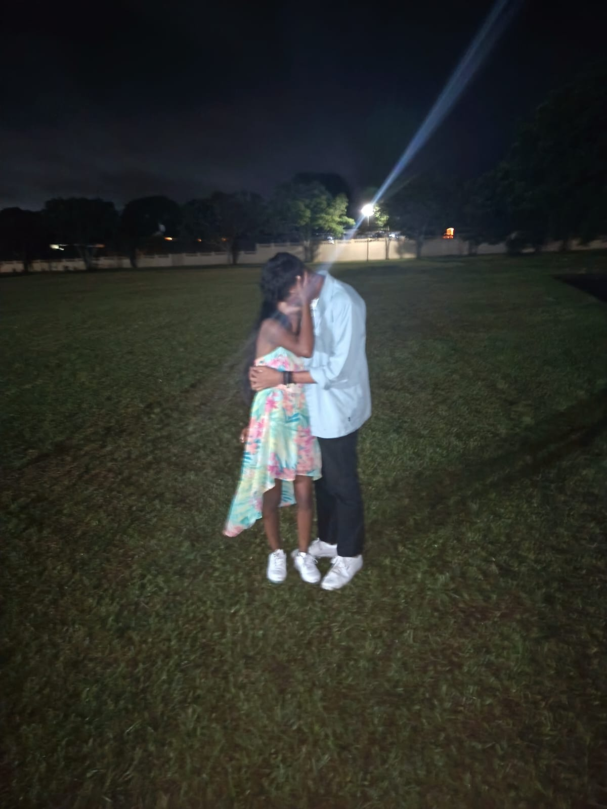
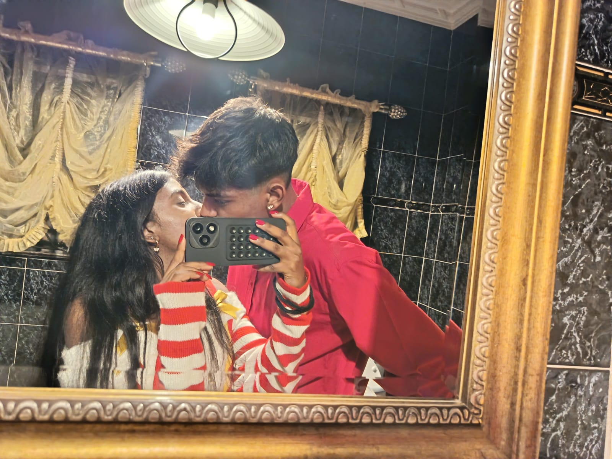
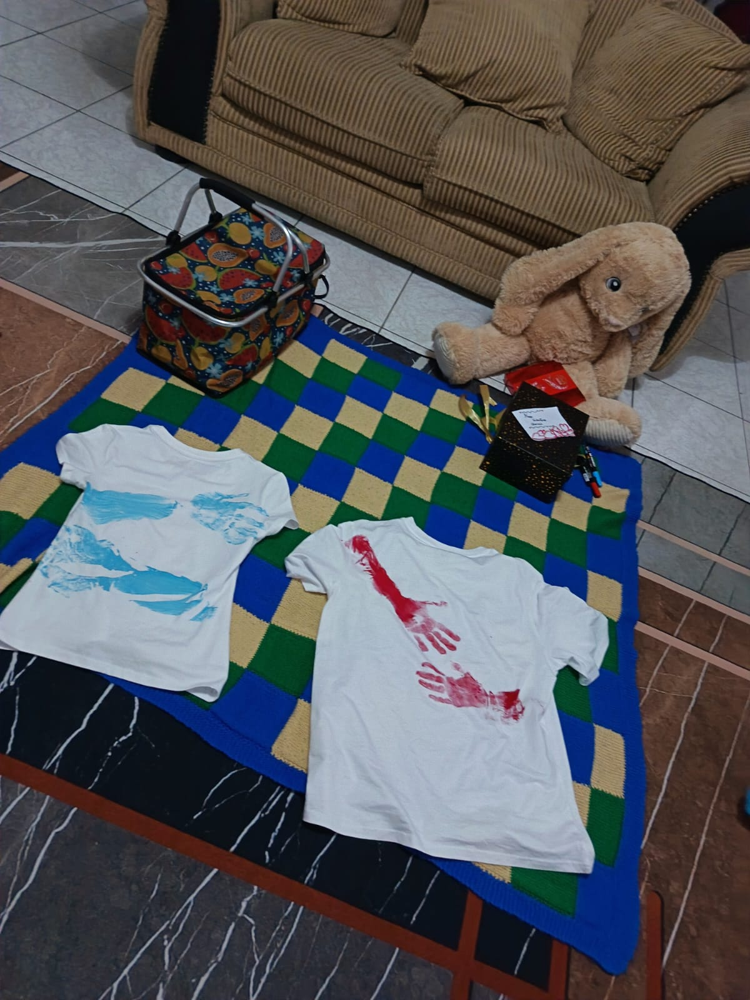
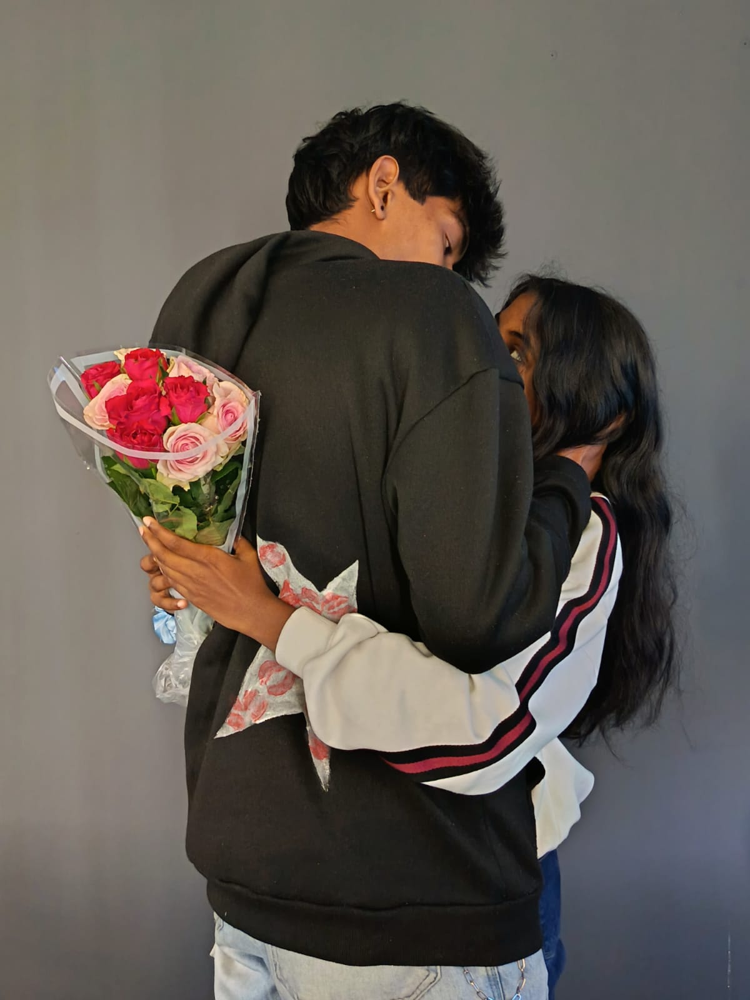
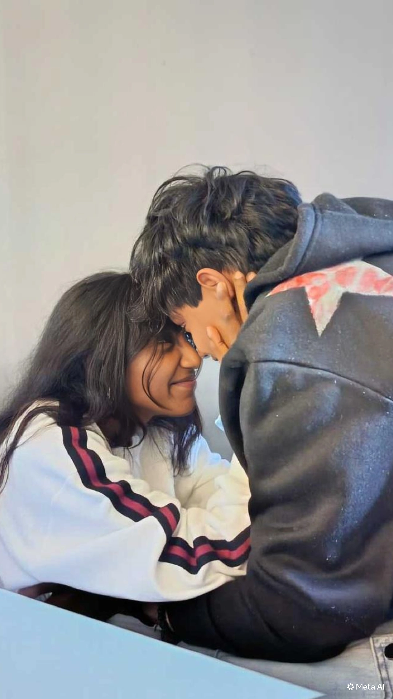

01
The online plot twist 😭
We met online, and somehow you thought I already had a girlfriend and was cheating on her. Imagine accusing me of cheating before we were even together. 😂❤️ Then you realised I was actually single…
22 OCTOBER 2025 · OUR BEGINNING
To my love, my lovie, my teacup — one year of us. Not a perfect story, but our story. And I wouldn't trade the good, the silly, or the growing for anything.
Start our little story ♡Counting down to our anniversary…

my favourite person
CHAPTER ONE
Before the dates, the kisses, the little arguments, the big laughs, and all the memories we keep collecting… there was just us, online.
We met online, and somehow you thought I already had a girlfriend and was cheating on her. Imagine accusing me of cheating before we were even together. 😂❤️ Then you realised I was actually single…
Me being me, I was forward about it. I got your number, we carried on talking, and little by little a random online conversation became something neither of us could just brush off.
Eventually, we started dating. The girl who once thought I was taken became my girlfriend—and one of the most important people in my life. Funny how one conversation can change so much.
OUR FIRSTS & FAVOURITE THINGS
These are the memories you've told me about. Add your real photos to make this part even more yours.

Our first time see each other , the head bump, and the random Bluetooth moment.

Celebrating you became one of our first proper date memories. Getting to make you feel special was the best part.

Family dinner, meeting more of your people, matching outfits, and decorating the Christmas tree together.

Matching handprint shirts, a teddy bunny, wrapped gifts, and a day full of little things that meant a lot.

Getting to see you on campus and turning ordinary days into moments I get to keep.

Your love notes, your teasing, your hugs, and the way you check on me. The small things are never small to me.
THE REAL US
Let's be honest, my love: we had a lot of fights and some really bad days. There were moments when things felt hard, when we misunderstood each other, and when loving each other took work.
But there were more good days than bad. More laughs, sweet moments, memories, silly teasing, and reasons to be grateful for us. I don't want to pretend every day was perfect. I want to remember that even through the messy parts, we had something worth learning for and growing with.
One year isn't proof that we'll never struggle. It's a reminder of how much we've shared—and how much more we can learn about loving each other well.
Tap it, lovie. I've got plenty. ❤️
THE GIRL I LOVE
My feisty, brilliant, caring, romantic, my pretty girl. ❤️
And to the girl working toward her dreams: I hope you remember how capable you are, especially on the days you doubt yourself. I believe in you, my love.
A LETTER FOR MY LOVE
Happy one year, my love. ❤️ It's kind of mad to think that our story started with us talking online, you thinking I had a girlfriend, and me being bold enough to get your number once you realised I was single. And now look at us.
We've had beautiful days and we've had some really hard ones. We've fought, misunderstood each other, laughed until things felt silly, made memories, and learned things about ourselves and each other. I won't act like it was all sunshine, because that's not our story. But the good has outweighed the bad, and the moments with you mean so much to me.
I love your feisty little self, your brain, your love notes, your teasing, and the way you can be both my favourite person and my biggest menace. I love the memories we've made, from our first kiss and our first proper date to Christmas, Valentine's Day, and all the ordinary days in between.
I can't promise we'll never have another difficult day. I can promise that I want to keep learning, listening, growing, and loving you better. I want more laughs, more photos, more dates, more silly stories, and more chapters with you in them.
Thank you for this first year, my love. Thank you for being my lovie, my teacup, and my person. This website is only a tiny piece of how much you mean to me.
Always yours,
Mihir ♡
A LITTLE MESSAGE FOR THE FUTURE
Right now, we're making this anniversary box and saving pieces of our first year. If you're watching this one day, this is where our story was at the beginning: two young people learning to love, laughing at silly things, getting things wrong sometimes, and making memories that mattered.
Future-kids video.